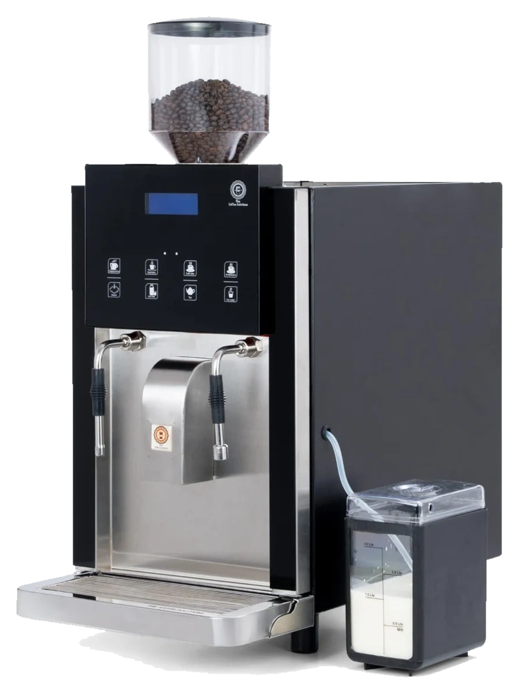

Equipment for your business
Choose equipment
that works for you.
Compare machine types, drink options and specifications for your café, office or workplace. Share your menu, expected demand and site details to discuss a suitable setup.
Discuss your requirements
Explore the equipment
Compare options
for your service.
Review the listed features and specifications to see what may suit your operation. Details are based on the equipment brochure; contact us to confirm current models and configurations.
View from the side
B2C 2.4 · Automatic bean-to-cup
B2C 2.4
Bean-to-cup coffee.
For businesses serving espresso and milk-based drinks, the B2C 2.4 combines whole-bean coffee with a fresh-milk container. Digital controls and automatic cleaning are among the listed features. Review the specifications and confirm the configuration for your site.
Drinks listed
Espresso · Cappuccino · Café latte · Hot milk · Hot water · Steam
- Automatic cleaning and hot-water flushing
- Password-protected menu settings and water-overheating protection
- Steam wand for extra-hot beverages
- Dispensing rate
- 3 cups / minute
- Bean hopper
- 1 kg
- Milk container
- 3 L
- Boiler capacity
- 3.5 L
- Power supply
- 230 V, single phase AC
- Dimensions · H × W × D
- 540 × 325 × 640 mm
- Net weight
- 45 kg
- Cleaning
- Auto clean & hot-water flushing
Specifications from the equipment brochure. Confirm the current model and configuration with us.
View from the side
FTC 2.4 · Filter coffee & tea
FTC 2.4
Filter coffee & tea.
The FTC 2.4 is listed for filter coffee and tea service, with strong, light and black drink options. Review its brewing and storage details to assess how it may fit your menu and service volume.
Drinks listed
Strong, light & black coffee · Strong, light & black tea · Milk · Hot water · Steam
- Fresh-water brewing with named drink buttons and a digital counter
- Automatic cleaning for everyday operation
- Optional steamer and steam wand for extra-hot drinks
- Dispensing rate
- 4–6 cups / minute
- Coffee / tea powder
- 200 / 250 g
- Milk boiler
- 3 + 3 L
- Decoction storage
- 3 L
- Power supply
- 230 V, single phase
- Dimensions · H × W × D
- 630 × 360 × 600 mm
- Net weight
- 35 kg
- Initial startup
- 10 minutes
Specifications from the equipment brochure. Confirm the current model and configuration with us.
A countertop range for a well-run beverage corner.
Boiler series · Countertop service
Boilers & dispensers.
Ready for service.
Explore countertop boiler and dispenser formats for tea, coffee and milk service in offices, canteens and other shared spaces. Compare the listed sizes with your service needs and available counter space.
Plan your setup
Consider the drinks you serve, how many people you serve and the counter space available.
- 5-litre and 12-litre formats in the range
- Countertop dispensing for shared beverage service
- Range formats
- 5 L & 12 L
- Service style
- Countertop dispensing
- Drink service
- Tea, coffee & milk
- Dispensing
- Tap service
Available formats and features depend on the selected model. Our team can confirm the details.
Review the product details.
View the FTC & B2C equipment brochure (PDF, opens in a new tab)Need help comparing?
Let’s talk through
your requirements.
Tell us about your menu, expected demand and site. We can help you review the available equipment options.
Discuss your setup